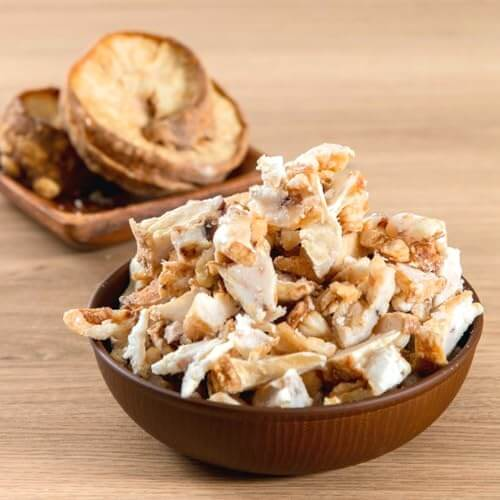
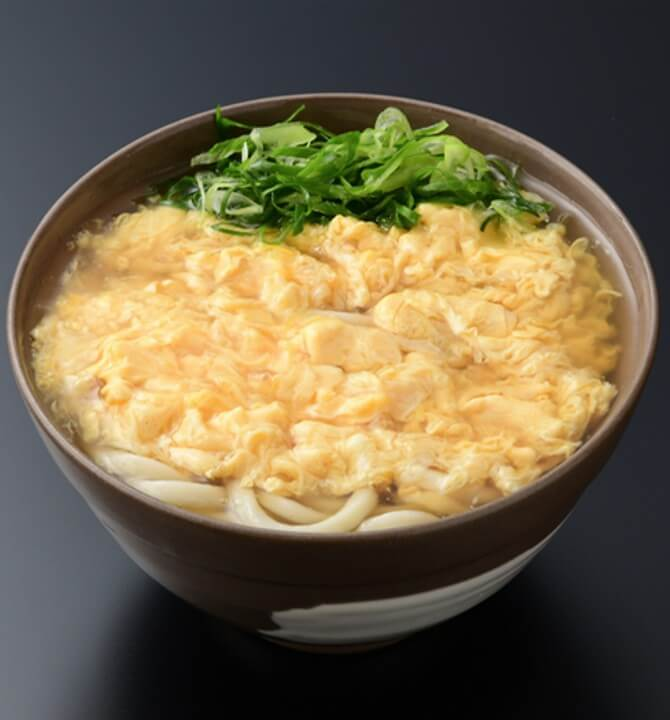

和風うどんメニュー
● かけうどん
出汁の香り引き立つ、うどんの原点。
A simple bowl to savor the essence of dashi broth.
最能品味高汤本味的基础乌冬。
담백한 국물 맛을 즐길 수 있는 기본 우동.
● きつねうどん
甘く煮たお揚げが心を和ませる一杯。
Sweet tofu topping brings warmth to your soul.
甜甜豆皮唤起温暖心情。
달콤한 유부로 마음이 포근해지는 우동.
● 天ぷらうどん
サクッと香ばしい天ぷらが彩る一椀。
Crispy tempura meets smooth udon in harmony.
香酥天妇罗与乌冬相得益彰。
바삭한 튀김과 쫄깃한 면발의 조화.
● かき揚げうどん
野菜の旨味がギュッと詰まった一杯。
A crispy fritter of veggies and shrimp adds rich flavor.
丰富蔬菜与虾仁炸饼添香增味。
야채와 새우튀김으로 풍미 가득한 한 그릇.
● 肉うどん
甘辛の牛肉が食欲をそそる人気うどん。
Sweet-savory beef makes every bite satisfying.
牛肉香浓，咬一口满满满足感。
달콤한 소고기로 든든하게 채워주는 우동.
● とり天うどん
鶏の旨味と天ぷらの香ばしさが絶妙。
Chicken tempura adds a hearty touch.
炸鸡天妇罗，酥脆又满足。
닭튀김의 고소함이 살아있는 우동.

● かすうどん
関西名物！香ばしい油かすがクセになる。
Kansai-style udon with crispy beef fat. Addictive flavor!
关西特产，香脆牛油渣令人上瘾。
간사이 명물, 고소한 기름 부스러기 풍미.
● 釜玉うどん
卵と醤油が絡む、茹でたての贅沢。
Raw egg and soy sauce over fresh udon—rich and simple.
生鸡蛋与酱油融合的绝妙滋味。
갓 삶은 면에 날계란, 간장의 진한 조화.
● 明太釜玉うどん
明太子のピリ辛が釜玉を一味アップ。
Spicy cod roe gives this dish a bold twist.
明太子的微辣令人回味无穷。
매콤한 명란이 더해져 특별한 맛.

● 卵とじうどん
ふわふわ卵で包む、やさしい味わい。
Fluffy egg wraps the noodles in gentle warmth.
鸡蛋柔软地包裹着温暖的乌冬面。
부드러운 계란이 우동을 감싸 안은 포근함.
● 肉カレーうどん
旨味たっぷり！カレーと牛肉の黄金コンビ。
A rich curry broth with tender beef—ultimate comfort.
浓郁咖喱与牛肉的完美结合。
진한 카레와 소고기의 황금 조합。